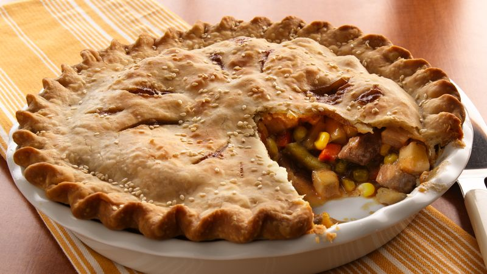
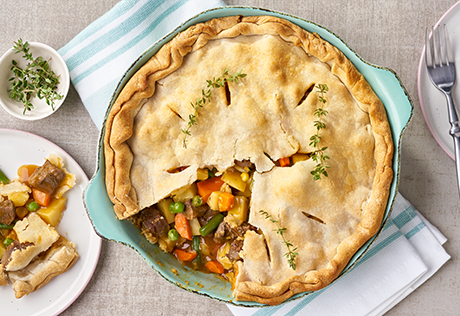
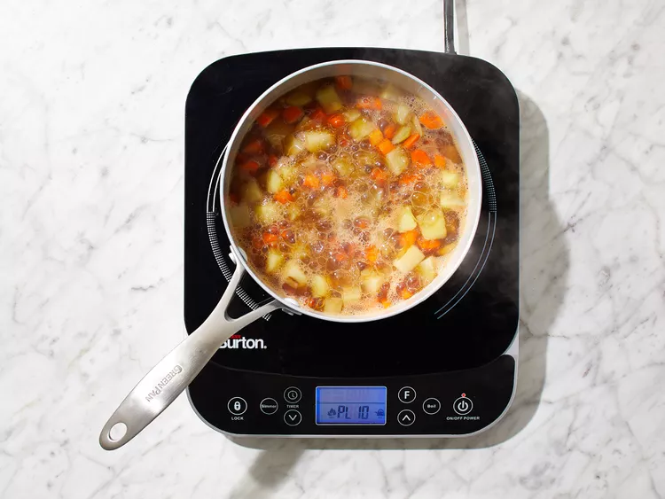
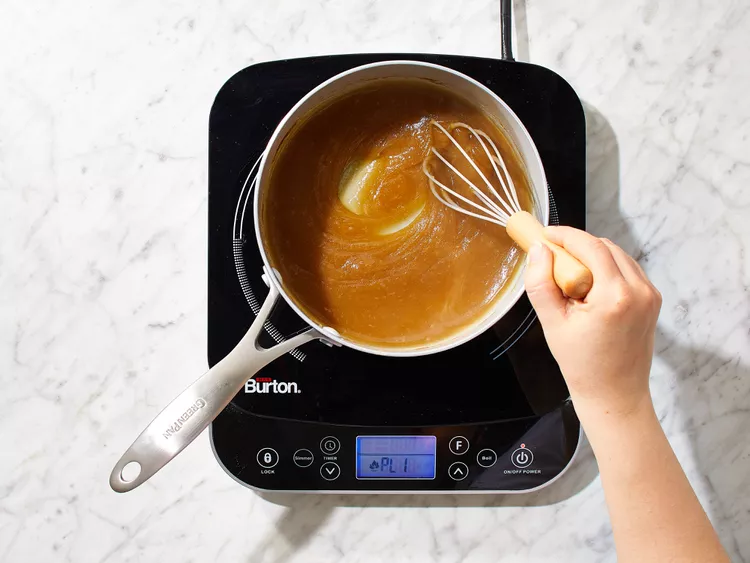
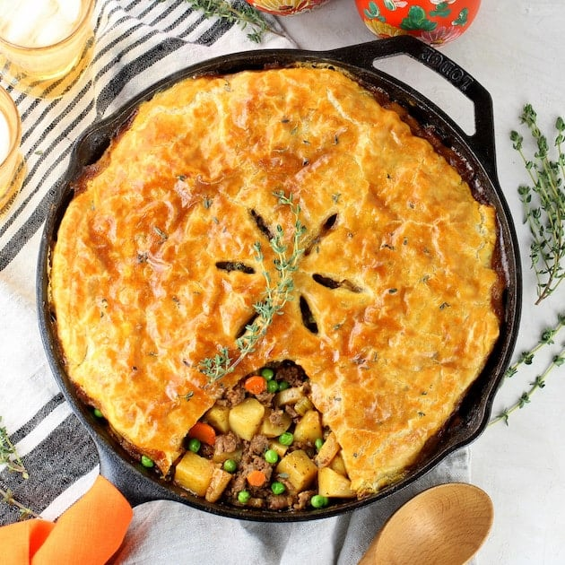
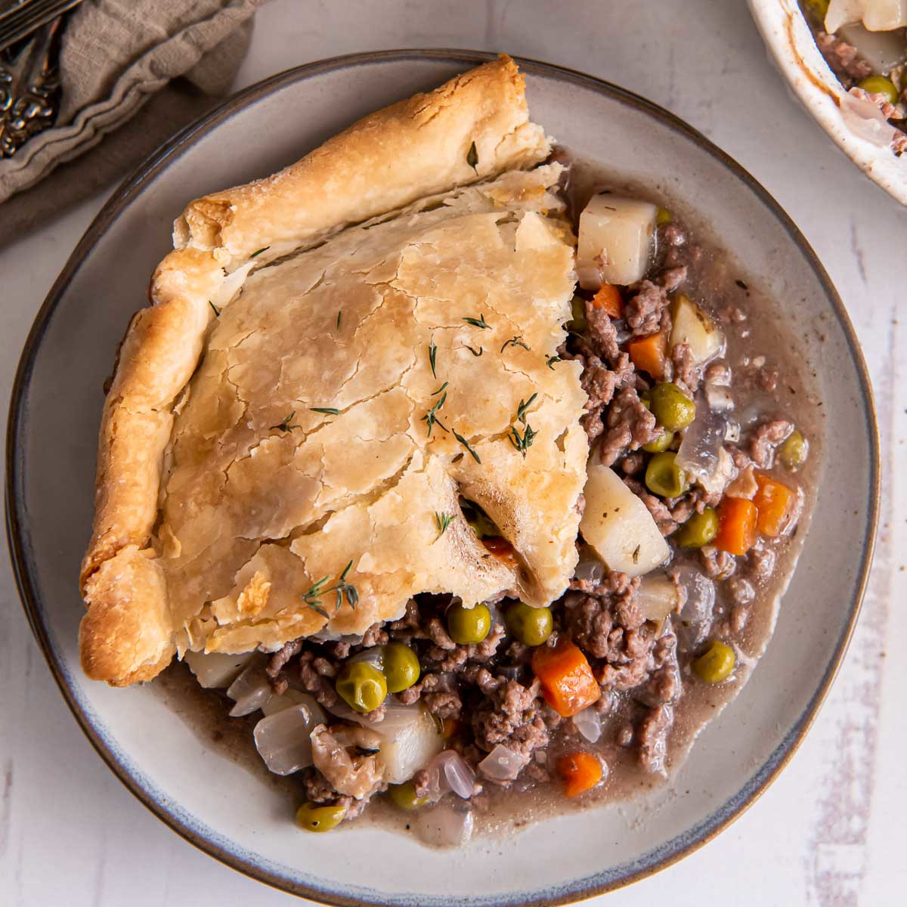
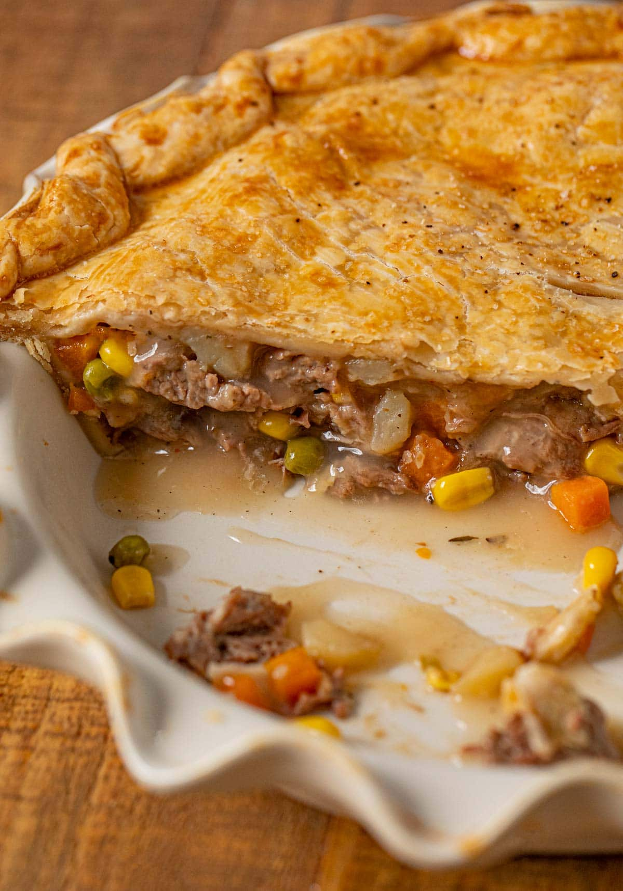
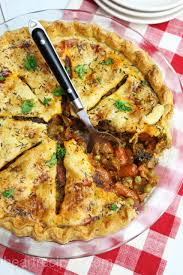
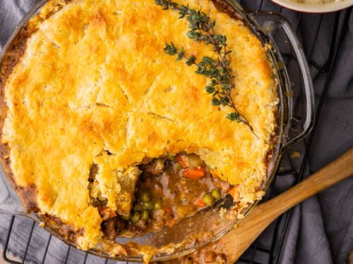

2. Beef Pot Pie!

No, it's not just all beef...
A pot pie is in and of itself a type of pie where dough is molded and used as a cover for many different ingredients - not the sweet stuff for this particular recipe -
in this particular variant, using a pot, as a surface to mold the dough around. This one uses not just beef, but a number of other ingredients to make it a satisfying eat - and it's the ideal
meal to share that same thought! The classic pie and its sidekick gravy is a meal for all, and has become ubiquitous, or all-present, in the world of cooking for both beginners and seasoned creators of general cuisine,
and its huge variable use, be it for a special occasion like party or holiday, meal prep, or for your own specific needs, and all variants of the pie are perfect for all uses (ok, maybe not all, but you get the idea).
To make a pot pie, a simple recipe will be the perfect fit for anyone starting off.

Just because it's a beef pot pie, doesn't mean you can't invite other ingredients.
Butn for the purpose of making a simple-to-follow recipe, we'll just stick with the standard issue.
We'll be using a variety of veggies and cubed steak, with the necessary pie crusts - thanks to Allrecipies. (See what we did there?)
Actual cooking time may take shorter or longer depending on your own conditions, but at the end, we'll have a quite large pie to dig into yourself and/or with others.
Make sure to gather the necessary utensils and cooking ware, like saucepans and bowls along with containers for the ingredients if you really want to organize - and with all that being said, here goes:
Prep Time: 20 min
Cook Time: 2 hours 30 min
Total Time: around 2 hours 55 min (taking into account any variables)
Servings: 6
Ingredients
- 1 pound sirloin steak, cubed
- Salt and ground black pepper to taste
- 1 (14 ounce) can beef broth
- 3 large carrots, diced
- 3 potatoes, cubed
- 1 cup frozen green peas, thawed
- 3 tablespoons cornstarch.This will make the essential gravy that will really complement the taste of this recipe.
- 1/3 cup of water
- 2 (9 inch) refrigerator pie crusts
Steps
- Gather all ingredients nearby.
- In a saucepan over medium wheat with a small amount of water (not using the 1/3 cup in the ingredients) brown the cubed meat. bring to a boil, reduce heat - then simmer until tender -
a 2 to 3 hour process. We got most of the time out of the way just with that step alone! To really cut down on time, perform this step in advance.
- Transfer meat to a mixing bowl and shred slightly (or don't - the world is your pie?). Add salt and pepper to the bowl.
- In another saucepan (preferebly of 2+ quart) pour in the beef broth along with the carrots and potatoes. Cook until almost tender - a 15 - 20 minute process.

- Preheat oven to 350 degrees Fahrenheit (175 degress Celsius).
- After the carrots and potatoes are complete, transfer those veggies, but not the beef broth, to the bowl from step 3 and mix;
leave only the beef broth in the saucepan when transferring the contents to the bowl. Now take the cornstarch, and...

- ...dissolve said cornstarch with the 1/3 cup water into the the latter used saucepan(the former can always be used if you can't). Stir constantly until brought to a simmer and reduce heat; cooking it over time for 5 minutes.
This makes the gravy that will be used on the next step.
- Following the directions of the packaging of your crust, line the bottom of your pie plate of the same inches as the pie crusts with one of the said crusts,
and pour the contents of the mixing bowl from earlier into the pie crust.
- Pour the gravy over and into the top of the mixture, and cover it with the other pie crust.
- We are nearly there. Remember the preheated oven from step 5? Bake the soon-to-be-done pie in the oven until crust is gold brown - a around ~25 minute process. Then,
take it out and let cool for 5 minutes before serving!
- You can always add other spices and mild herbs if you don't feel quite done yet!
12. Enjoy and savor!
Gallery: view other Beef Pot Pies here!





Go back
Next recipe